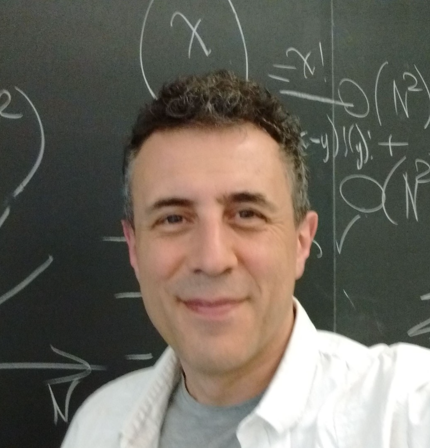

Ali Erkan

Ali Erkan is a Professor and Chair of Computer Science at Ithaca College. His areas of interest include computer networks, algorithms, databases, geographic information systems (GIS), and computer science education. He earned his Ph.D. and M.S. in Computer Science and his B.S. in Computer Engineering from Lehigh University. Before joining Ithaca College in 2004, he taught at Swarthmore College; in 2011–2012, he was a Fulbright Researcher at Koç University in Istanbul.
His teaching spans introductory computing, discrete mathematics, data structures, algorithms, computer systems, networking, and databases. In Discrete Mathematics, he uses spreadsheet-based activities to help students investigate abstract ideas. In Algorithm Design, students implement algorithms, experiment with their behavior, and examine efficiency. His database courses connect relational and non-relational data, as well as spatial information, to projects involving subjects such as history, elections, and geography.
Much of his scholarship grows out of teaching and interdisciplinary applications of computing. His work on teaching minimum spanning tree algorithms received the Best Paper Award at ITiCSE 2018. His more recent work examines ways of teaching dynamic programming and explores how spreadsheets, databases, and GIS can support learning in computer science and other disciplines.
As department chair since 2021, he has helped guide curriculum development, including the introduction of an Artificial Intelligence major, new computing minors, and a Data Science major developed in collaboration with Mathematics. He received an Ithaca College Faculty Excellence Award for his work as department chair in 2025.
Here are the courses taught by Dr. Erkan: dark green ones are in his usual rotation, light green ones are those he has taught in the past. Arrows represent prerequisite relations. By clicking on a colored course, you can read its description. Keyboard users can use Tab and Enter to navigate the visual.